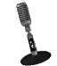
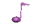
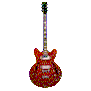
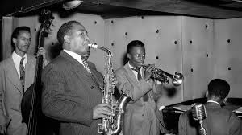

<!DOCTYPE html>
<html lang="en"></html>

<head>
  <meta charset="UTF-8" />
  <meta name="viewport" content="width=device-width, initial-scale=1.0" />
  <title>Genres of Music</title>
  <link rel="stylesheet" href="style.css" />
</head>

<body>
  <h1>Genres of Music</h1>

  <br><br>

  <p>Music has gone through much evolution throughout the years.
    From folk songs in medieval times to pop music in the 80's, music unites people with joy and a free spirit. 
    It has gained a lot of different genres throughout history such as <Strong>Hip-Hop, Pop, Rock, Jazz,</Strong> and many others around the world. 
    

  </p>

  <h1>What was popular in each era?</h1>

  <table>
    <tr>
      <th>1920's</th>
      <th>1950's</th>
      <th>1960's</th>
      <th>1990's</th>
    </tr>

    <tr>
      <td>Jazz</td>
      <td>Pop</td>
      <td>Rock</td>
      <td>Hip-Hop</td>
    </tr>

  </table>


  <br /><br />

  <h3>Hip-Hop:</h3>

  <p>
    <strong>Hip-Hop</strong>, also known as <strong>rap music </strong>or simply
    <strong>rap</strong>, is a genre of music that erupted in the 1970's. It is
    popular for break dancing and block parties in New York City. Some notable
    artists include Nicki Minaj, Snoop Dogg, Cardi B, and many others.
  </p>
  <p>
    Hip-Hop combines elements of rhythm, blues, jazz, funk, and soul. The first
    Hip-Hop artist is thought to be DJ Kool Herc, also known as the first
    rapper. Most Hip-Hop songs contain an intro, hooks(choruses), and verses.
    Sometimes, you might see songs with a different format but usually artists
    stick to those three.
  </p>
  
  
    <p>Listen to some Hip-Hop artists:</p>
    <ul>
        <li><a href="https://open.spotify.com/artist/0hCNtLu0JehylgoiP8L4Gh" target="_blank"> Nicki Minaj</a></li>
        <li><a href="https://open.spotify.com/artist/7hJcb9fa4alzcOq3EaNPoG" target="_blank"> Snoop Dogg</a></li>
        <li><a href="https://open.spotify.com/artist/4kYSro6naA4h99UJvo89HB" target="_blank"> Cardi B</a></li>
    </ul>

  <br /><br />

  <h3>Pop:</h3>
  <p>
    <strong>Pop</strong> music is a genre of <i>popular music</i> that
    originated it's mordern form in the 1950's in the UK. Originally, it was
    synonomous with Rock music but later on it strayed away and started being
    associated more with commercial, ephemeral, and easily accessible music.
  </p>
  <p>
    Pop music contains repeated choruses and hooks (short to medium-length songs
    written in a basic format). The terms <i>Pop Music</i> and
    <i>Popular music</i> are used interchangebly but both resemble the same
    thing. Some notable artists include Micheal Jackson, Lady Gaga, Bruno Mars,
    and many others.
  </p>
  <p>
    <strong>Micheal Jackson (1958-2009)</strong> Was known as the
    <i>King of Pop</i> and is regarded and one of the most culturally
    significant figures in music history.
  </p>
  
  

  <p>Listen to some Pop artists:</p>
    <ul>
        <li><a href="https://open.spotify.com/artist/3fMbdgg4jU18AjLCKBhRSm" target="_blank"> Micheal Jackson</a></li>
        <li><a href="https://open.spotify.com/artist/1HY2Jd0NmPuamShAr6KMms" target="_blank"> Lady Gaga</a></li>
        <li><a href="https://open.spotify.com/artist/0du5cEVh5yTK9QJze8zA0C" target="-blank"> Bruno Mars</a></li>
    </ul>


  <br /><br />

  <h3>Rock:</h3>
  <p>
    <strong>Rock</strong> is a genre of music that originated in the United
    States as <i>rock and roll</i> in the late 40's and early 50's. It developed
    into many different styles in the 60's, primarily in the United States and
    United Kingdom.
  </p>
  <p>
    Rock music typically is centered around an electric guitar in a band with an
    electric bass and drums. Until recently, rock music was the most popular
    genre in the United States (1960-2010). As time passes, rock has gained many
    subgenres, such as <i>indie</i> or <i>alternative</i> rock. Some notable
    bands include <i>The Beatles, Black Sabbath,</i> and<i> Metallica. </i>
  </p>
  
  
   
  <p>Listen to some Rock artists:</p>
    <ul>
        <li><a href="https://open.spotify.com/artist/3WrFJ7ztbogyGnTHbHJFl2" target="_blank"> The Beatles</a></li>
        <li><a href="https://open.spotify.com/artist/5M52tdBnJaKSvOpJGz8mfZ" target="_blank"> Black Sabbath </a></li>
        <li><a href="https://open.spotify.com/artist/2ye2Wgw4gimLv2eAKyk1NB" target="_blank"> Metallica</a></li>
    </ul>

  <br /><br />

    <h3>Jazz:</h3>
    <p><strong>Jazz</strong> is a genre of music that originated in <i>New Orleans, Louisiana</i> in the late 19th and early 20th century. It gained much popularity during WWI, known as the <i>Jazz Age</i> (1920's-early 1930's). Jazz music wasn't just something people listened to, it was the beginning of a new era of cultural expression, social freedom, and consumerism. It was a catalyst for social change for Women and African American women. Unfortunately, the social crash in 1929 also crashed Jazz's carefree spirit.</p>
    <p>Some notable Jazz Artists are <i>Ella Fitzgerald</i>, <i>Louis Armstrong</i>, and <i>Frank Sinatra</i>.</p>
    
    

     <p>Listen to some Jazz artists:</p>
    <ul>
        <li><a href="https://open.spotify.com/artist/5V0MlUE1Bft0mbLlND7FJz" target="_blank"> Ella Fitzgerald</a></li>
        <li><a href="https://open.spotify.com/artist/19eLuQmk9aCobbVDHc6eek" target="_blank"> Louis Armstrong</a></li>
        <li><a href="https://open.spotify.com/artist/1Mxqyy3pSjf8kZZL4QVxS0" target="_blank"> Frank Sinatra</a></li>
    </ul>
</body>

<p><strong>Sources:</strong></p>
 <ul>
        <li><a href="https://www.britannica.com/art/jazz" target="_blank">Britannica</a></li>
        <li><a href="https://en.wikipedia.org/wiki/Hip-hop" target="_blank">Wikipedia</a></li>
   </ul>
